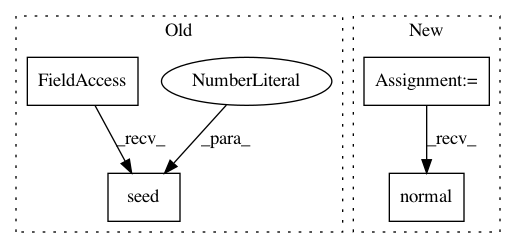

4eeb3b98b5d033c3c053942592b39fb58731c783,scipy/spatial/transform/tests/test_rotation.py,,test_inv,#,671
Before Change
def test_inv():
np.random.seed(0)
n = 10
p = Rotation.from_quat(np.random.normal(size=(n, 4)))
q = p.inv()
After Change
def test_inv():
rnd = np.random.RandomState(0)
n = 10
p = Rotation.from_quat(rnd.normal(size=(n, 4)))
q = p.inv()
p_mat = p.as_matrix()
In pattern: SUPERPATTERN
Frequency: 5
Non-data size: 4
Instances
Project Name: scipy/scipy
Commit Name: 4eeb3b98b5d033c3c053942592b39fb58731c783
Time: 2021-02-24
Author: m.scherer@fu-berlin.de
File Name: scipy/spatial/transform/tests/test_rotation.py
Class Name:
Method Name: test_inv
Project Name: scikit-image/scikit-image
Commit Name: 307a4e9936044c5f63e49aac5a2928b46bb11558
Time: 2016-05-08
Author: kevin@klarismo.com
File Name: skimage/measure/tests/test_fit.py
Class Name:
Method Name: test_ellipse_model_estimate
Project Name: scikit-image/scikit-image
Commit Name: 307a4e9936044c5f63e49aac5a2928b46bb11558
Time: 2016-05-08
Author: kevin@klarismo.com
File Name: skimage/measure/tests/test_fit.py
Class Name:
Method Name: test_circle_model_estimate
Project Name: scipy/scipy
Commit Name: 4eeb3b98b5d033c3c053942592b39fb58731c783
Time: 2021-02-24
Author: m.scherer@fu-berlin.de
File Name: scipy/spatial/transform/tests/test_rotation.py
Class Name:
Method Name: test_inv_single_rotation
Project Name: scikit-image/scikit-image
Commit Name: 307a4e9936044c5f63e49aac5a2928b46bb11558
Time: 2016-05-08
Author: kevin@klarismo.com
File Name: skimage/measure/tests/test_fit.py
Class Name:
Method Name: test_line_modelND_estimate